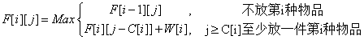
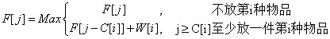

背包问题——“完全背包”详解及实现
概论
完全背包是在N种物品中选取若干件（同一种物品可多次选取）放在空间为V的背包里，每种物品的体积为C1，C2，…，Cn，与之相对应的价值为W1,W2，…，Wn.求解怎么装物品可使背包里物品总价值最大。
动态规划（DP）：
1. 子问题定义：F[i][j]表示前i种物品中选取若干件物品放入剩余空间为j的背包中所能得到的最大价值。
2. 根据第i种物品放多少件进行决策
说明：
- 其中F[i-1][j-K•C[i]]+K•W[i]表示前i-1种物品中选取若干件物品放入剩余空间为j-C[i]的背包中所能得到的最大价值加上k件第i种物品；
- 设物品种数为N，背包容量为V，第i种物品体积为C[i]，第i种物品价值为W[i]。
- 与01背包相同，完全背包也需要求出NV个状态F[i][j]。但是完全背包求F[i][j]时需要对k分别取0,…，j/C[i]求最大F[i][j]值,耗时为j/C[i]。那么总的时间复杂度为O(NV∑(j/C[i]))
由此写出伪代码如下：(cpp)
F[0][] ← {0}
F[][0] ← {0}
for i←1 to N
do for j←1 to V
do for k←0 to j/C[i]
if(j >= k*C[i])
then F[i][k] ← max(F[i][k],F[i-1][j-k*C[i]]+k*W[i])
return F[N][V] 以上伪代码数组均为基于1索引，即第一件物品索引为1。空间复杂度O(VN)、时间复杂度为O(NV∑(j/C[i]))
简单优化
若两件物品满足C[i] ≤C[j]&&W[i] ≥W[j]时将第j种物品直接筛选掉。因为第i种物品比第j种物品物美价廉，用i替换j得到至少不会更差的方案。
这个筛选过程如下：先找出体积大于背包的物品直接筛掉一部分（也可能一种都筛不掉）复杂度O(N)。利用计数排序思想对剩下的物品体积进行排序，同时筛选出同体积且价值最大的物品留下，其余的都筛掉（这也可能一件都筛不掉）复杂度O(V)。整个过程时间复杂度为O(N+V)
转化为01背包：
因为同种物品可以多次选取，那么第i种物品最多可以选取V/C[i]件价值不变的物品，然后就转化为01背包问题。整个过程的时间复杂度并未减少。如果把第i种物品拆成体积为C[i]×2k价值W[i]×2k的物品，其中满足C[i]×2k≤V。那么在求状态F[i][j]时复杂度就变为O(log2(V/C[i]))。整个时间复杂度就变为O(NVlog2(V/C[i]))
时间复杂度优化为O(NV)
将原始算法的DP思想转变一下。
设F[i][j]表示出在前i种物品中选取若干件物品放入容量为j的背包所得的最大价值。那么对于第i种物品的出现，我们对第i种物品放不放入背包进行决策。如果不放那么F[i][j]=F[i-1][j]；如果确定放，背包中应该出现至少一件第i种物品，所以F[i][j]种至少应该出现一件第i种物品,即F[i][j]=F[i][j-C[i]]+W[i]。为什么会是F[i][j-C[i]]+W[i]？因为F[i][j-C[i]]里面可能有第i种物品，也可能没有第i种物品。我们要确保F[i][j]至少有一件第i件物品，所以要预留C[i]的空间来存放一件第i种物品。
状态方程为：
伪代码为：
F[0][] ← {0}
F[][0] ← {0}
for i←1 to N
do for j←1 to V
F[i][j] ← F[i-1][j]
if(j >= C[i])
then F[i][j] ← max(F[i][j],F[i][j-C[i]]+ W[i])
return F[N][V] 具体背包中放入那些物品的求法和01背包情况差不多，从F[N][V]逆着走向F[0][0]，设i=N,j=V，如果F[i][j]==F[i][j-C[i]]+W[i]说明包里面有第i件物品，同时j -= C[i]。完全背包问题在处理i自减和01背包不同，01背包是不管F[i][j]与F[i-1][j-C[i]]+W[i]相不相等i都要减1，因为01背包的第i件物品要么放要么不放，不管放还是不放其已经遍历过了，需要继续往下遍历而完全背包只有当F[i][j]与F[i-1][j]相等时i才自减1。因为F[i][j]=F[i-1][j]说明背包里面不会含有i，也就是说对于前i种物品容量为j的背包全部都放入前i-1种物品才能实现价值最大化，或者直白的理解为前i种物品中第i种物品物不美价不廉，直接被筛选掉。
打印背包内物品的伪代码如下：
i←N
j←V
while(i>0 && j>0)
do if(F[i][j]=F[i][j-C[i]]+W[i])
then Print W[i]
j←j-C[i]
else
i←i-1 和01背包一样，也可以利用一个二维数组Path[][]来标记背包中的物品。开始时Path[N][V]初始化为0,当 F[i][j]==F[i][j-C[i]]+W[i]时Path[i][j]置1。最后通过从Path[N+1][V+1]逆着走向Path[0][0]来获取背包内物品。其中Path[0][]与Path[][0]为边界。同样，在打印路径的时候当Path[][]=1时，打印W[i]；Path[][]=0时i自减1.
加入路径信息的伪代码如下：
F[0][] ← {0}
F[][0] ← {0}
Path[][] ← 0
for i←1 to N
do for k←1 to V
F[i][k] ← F[i-1][k]
if(k >= C[i] && F[i][k] < F[i][k-C[i]]+W[i])
then F[i][k] ← F[i][k-C[i]]+W[i]
Path[i][k] ← 1
return F[N][V] and Path[][] 打印背包内物品的伪代码如下：
i←N
j←V
while(i>0 && j>0)
do if(Path[i][j]=1)
then Print W[i]
j←j-C[i]
else
i←i-1 优化空间复杂度为O（V）
和01背包问题一样，完全背包也可以用一维数组来保存数据。算法样式和01背包的很相似，唯一不同的是对V遍历时变为正序，而01背包为逆序。01背包中逆序是因为F[i][]只和F[i-1][]有关，且第i件的物品加入不会对F[i-1][]状态造成影响。而完全背包则考虑的是第i种物品的出现的问题，第i种物品一旦出现它势必应该对第i种物品还没出现的各状态造成影响。也就是说，原来没有第i种物品的情况下可能有一个最优解，现在第i种物品出现了，而它的加入有可能得到更优解，所以之前的状态需要进行改变，故需要正序。
状态方程为：
伪代码如下：
F[] = {0}
for i←1 to N
do for k←C[i] to V
F[k] ← max(F[k],F[k-C[i]]+W[i])
return F[V] 具体背包中放入那些物品的求法和上面空间复杂度为O(NV)算法一样，用一个Path[][]记录背包信息。但这里面是当F[i]=F[i-C[i]]+W[i]时将Path置1.
伪代码如下：
F[0][] = {0}
F[][0] = {0}
Path[][] ← 0
for i←1 to N
do for k←C[i] to V
if(F[i] < F[k-C[i]]+W[i])
then F[i] ← F[k-C[i]]+W[i]
Path[i][k] ← 1
return F[N][V] and Path[][] 打印路径的伪代码和前面未压缩空间复杂度时的伪代码一样，这里不再重写。